|
|
Getting Started - What are zones, surfaces, and sub-surfaces
Adding a New Zone and its base-surfaces
- There are two ways to start to work with OpenStudio. One way is to import an existing EnergyPlus IDF file. The other way is to start a new model. When you first open SketchUp with OpenStudio running, it loads a template IDF file.
- The first thing you need to do is create your first Zone. You do that with the New Zone Tool. After selecting the tool from the OpenStudio Toolbar you click in the model where you want the zone origin to be.
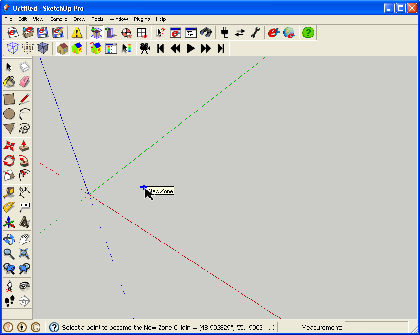
(Credit: David Goldwasser / NREL)
- After you insert the zone you should see a blue bounding box around your selected zone.
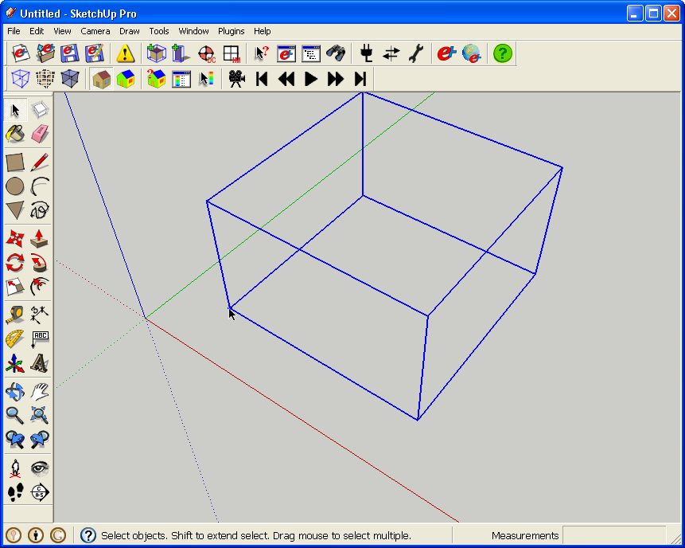
(Credit: David Goldwasser / NREL)
- You can double click on the small tick mark to activate your zone. There may be times that it is tough or impossible to select your zone with this method, for example if it is right on the edge of another zone. There are a few other alternative ways to edit a zone listed below.
- Double click on some geometry in the zone (as mentioned above, if you have something to click)
- Right click on geometry in the zone and choose "Edit Group" (same issues as with method above)
- Double click the zone in the Outliner Window, or single click and then right click "Edit Group"
- With the group selected go to go to the edit menu and choose "Group/Edit Group"
- Once you do have the zone activated, it should appear like it does below. Your blue solid bounding box is now a dashed line.
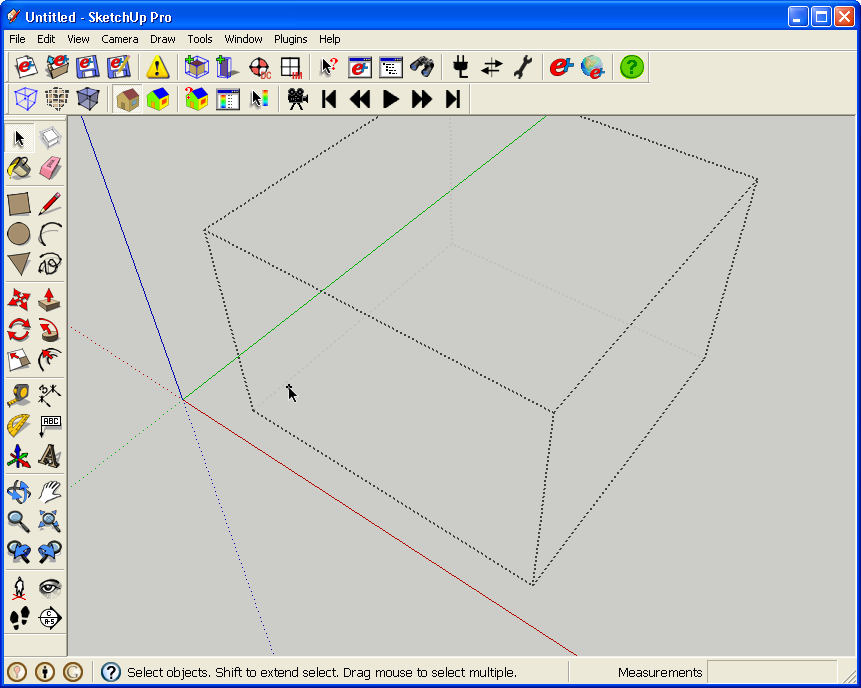
(Credit: David Goldwasser / NREL)
- So now you need to start modeling. Your first surface will be a wall, floor or roof. Typically it will be a floor. I have drawn it here with the Rectangle Tool, but you can one of the other SketchUp drawing tools, including the Line Tool.
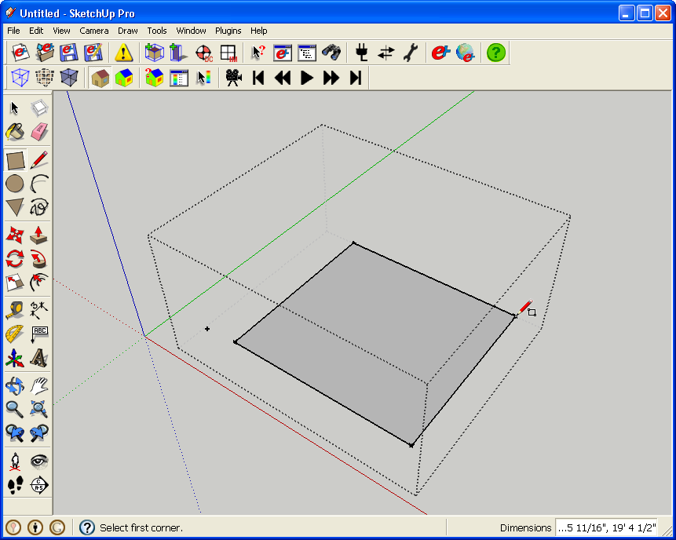
(Credit: David Goldwasser / NREL)
- After the floor is drawn you can use the Push/Pull Tool to create a building out of your floor. Again you can create geometry with the Line or other tools, but Push/Pull works very well for this. You should see colors similar to below. With OpenStudio zones you never paint materials yourself. OpenStudio determines what type of surface it is, and then automatically colors it.
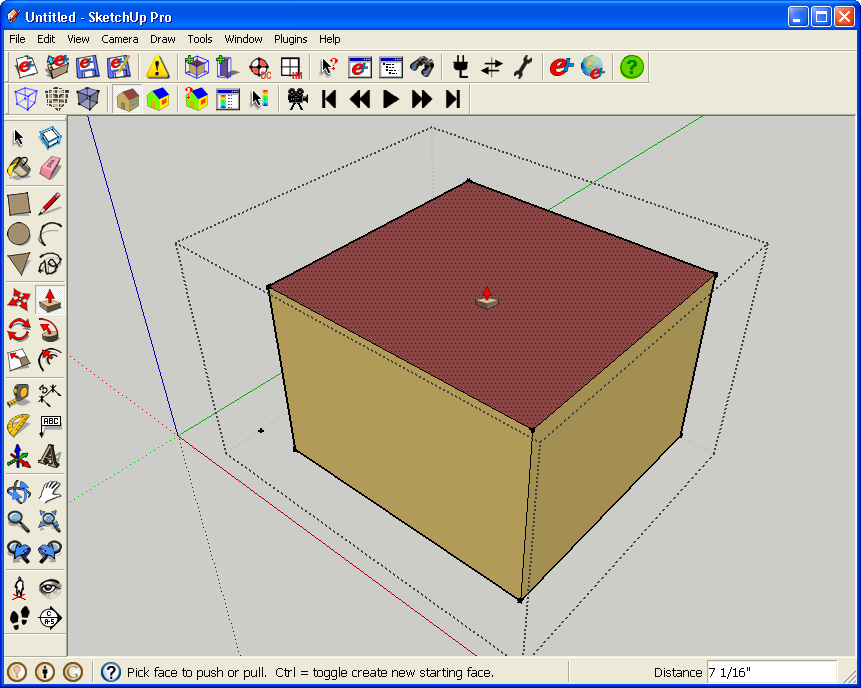
(Credit: David Goldwasser / NREL)
Creating Sub-surfaces
- Once you have four walls and a roof, you can start adding sub-surfaces to your model. Sub-surfaces are, as their name suggests, surfaces that sit within a base-surface. This includes doors, windows and skylights. There are a number of guidelines to follow with sub-surfaces.
- Don't make a sub-surface as large as it's base-surface. If you want a full wall window, inset the window a small amount.
- Don't put two sub-surfaces side by side.
- Don't create a subsurface that touches more than one edge of a base surface.
- If you want to erase a sub-surface, just erase the edges, and not the face. Don't erase the edges that are also part of the base-surface edge. (e.g. the bottom of a door).
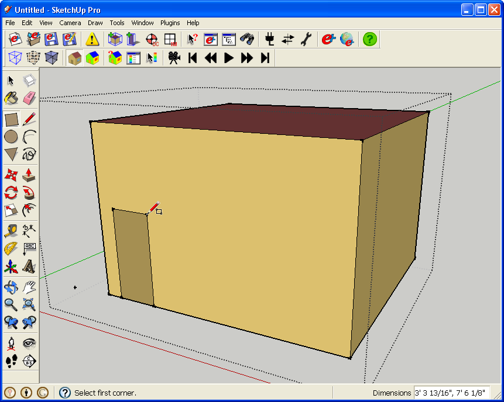
(Credit: David Goldwasser / NREL)
- Sub-surfaces also have their own automatic color scheme. Doors are brown, and windows are a translucent blue. If you draw something and it isn't the color you expected, that is a sign that something is wrong. Check with the Object Info Window or the Information Tool to see what OpenStudio has interpreted the surface to be.
- You can resize both your base-surfaces and sub-surfaces as you design your building. Just make sure to keep an eye on the coloring and the Object Info Window for any problems that come up.
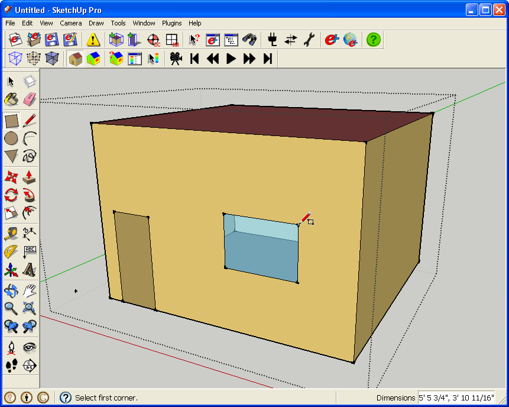
(Credit: David Goldwasser / NREL)
- Below you can see the Information Tool displaying information about the surface that it is being dragged over. A wall in the first image, and a window in the following image.
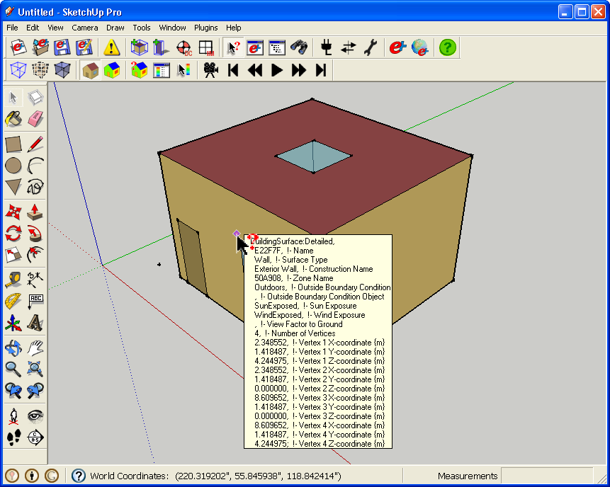
(Credit: David Goldwasser / NREL)
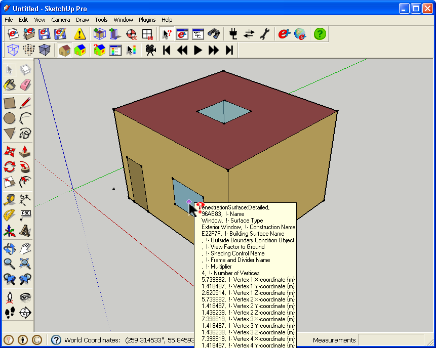
(Credit: David Goldwasser / NREL)
Adding a Shading Group
- Next I'm adding a Shading Group. Every face drawn in a Shading Group becomes a shading surface.
- You can see on this example that I used the Outliner to activate an empty Shading Group.
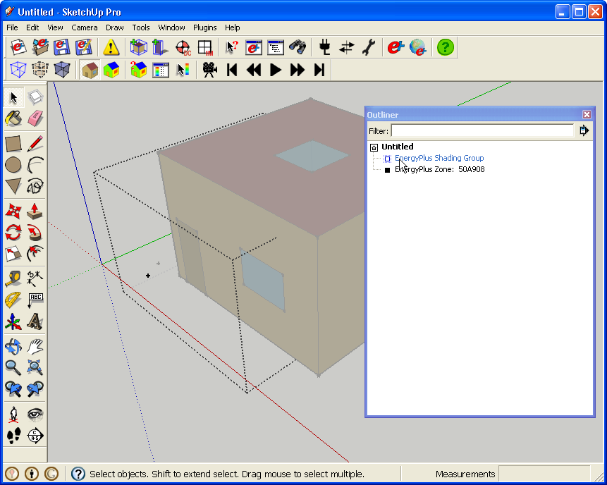
(Credit: David Goldwasser / NREL)
- Below I'm drawing a horizontal shading surface over the door and window. A key to drawing this with the face correctly oriented is to draw using the right hand rule, which is to say that I draw the points in a counter-clockwise direction. For all surfaces in OpenStudio the darker material is on the front face, and the lighter material is on the back face. If you see lighter materials where they shouldn't be it is a sign to check out your model before you proceed.
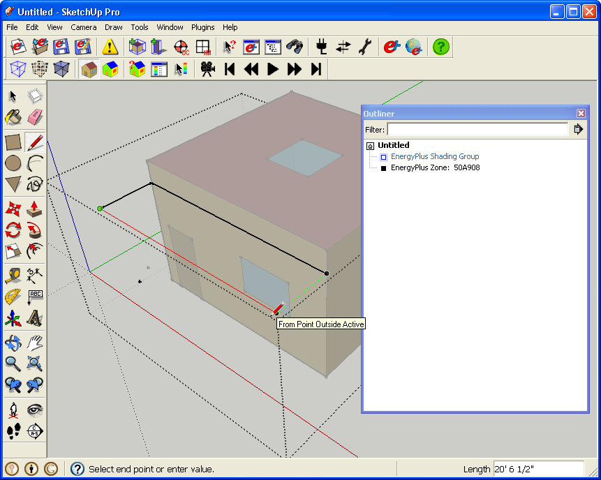
(Credit: David Goldwasser / NREL)
- Below is a completed zone with shading group.
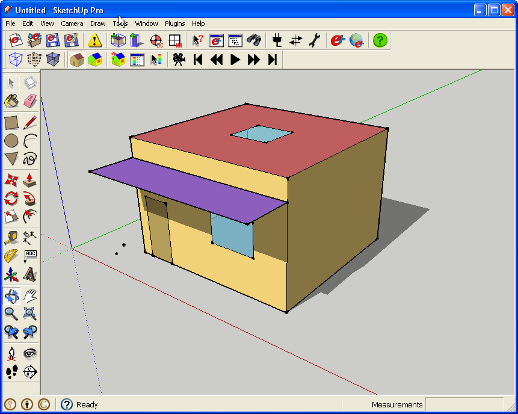
(Credit: David Goldwasser / NREL)
What's Next?
- So now you have your zone, what is next?
- Maybe you are ready to to run your simulation, but more than likely you want to add another Zone
- The Surface Matching Tutorial is a good place to go to learn about making necessary connections between adjacent zones.
|
|
|